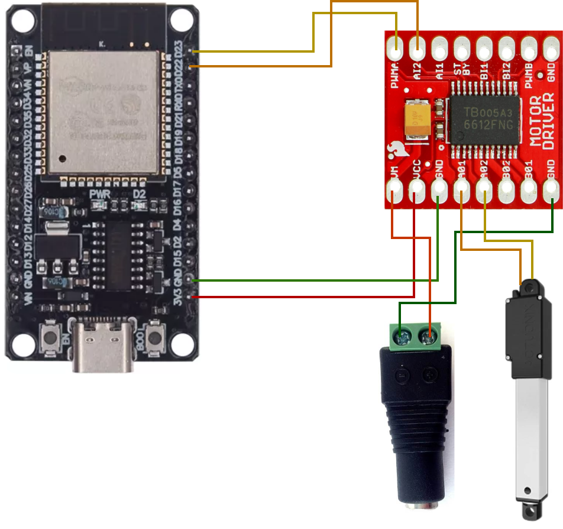
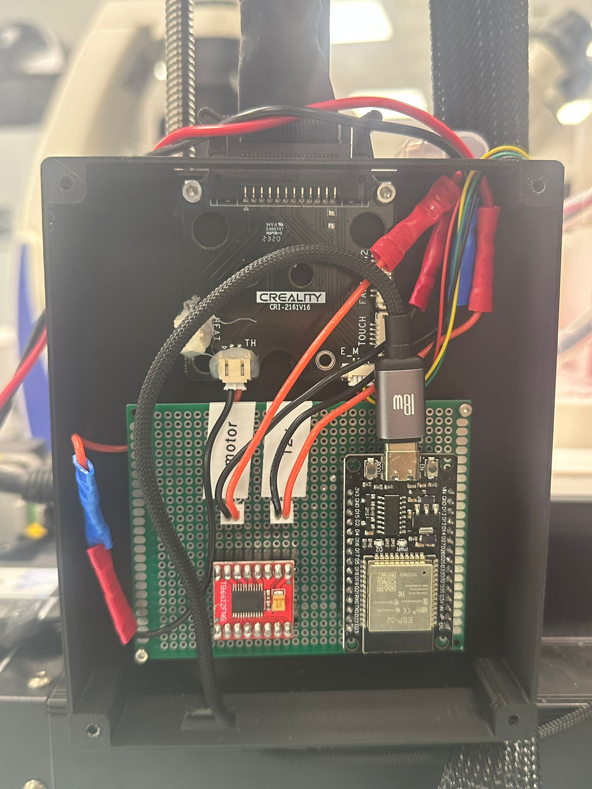

Electronics
Solder the control board, wire the motor and the 12V supply, flash the ESP32, and mount it all in the enclosure.
In progressComponents & materials
- Mounting Case
- ESP32 Development Board
- TB6612FNG Motor Driver Module
- DC Barrel Jack (for 12V input)
- Linear Actuator
- Donut Board / Perforated PCB
- Creality Extruder Breakout Board
- Ender 3 S1 Extruder Breakout Board
- Female Header Pins (x2, to socket the ESP32 / driver)
- JST 2-Pin Male PCB Headers (x2)
- JST 2-Pin Female Wire Connectors (x2)
- Butt Crimp Connectors
- 24 AWG Hook-up Wire (recommended)
- Solder
- USB-C Cable
- M2 & M3 Screws
- Molex PicoBlade (1.25mm pitch) 4-pin male Connectors
- Stepper Motor JST Connector
Tools & software
- Soldering Iron & Solder Wire
- Wire Strippers
- Crimping Tool (for JST / butt crimps)
- Multimeter
- Arduino IDE — download and install it before you reach §3.
1. Soldering the PCB
Follow the schematic below to assemble your control board on the donut board.

- Solder the female header pins onto the donut board for the ESP32 and the TB6612FNG motor driver.
- Run your 24 AWG wires along the back of the board to establish the connections between the ESP32 pins, the motor driver logic pins, and the power rails.
- Solder the two JST 2-pin male headers onto the board. One will serve as the dedicated 12V power supply input, and the other will serve as the motor driver output to the linear actuator.
- Use a multimeter continuity tester to check the connections.
2. Wiring the motor and 12V power supply
Once your main control board is soldered, prepare the external connections.
2.1. Power supply connection
- Strip the ends of the positive and negative wires coming from your 12V DC barrel jack.
- Crimp these wires into a JST 2-pin female connector housing.
- Double-check your polarity (+/−) against your PCB layout before plugging it into the power input JST header.
2.2. Linear actuator connection
- Cut the factory leads of the linear actuator to your desired length and strip the ends.
- Crimp a JST 2-pin female connector housing onto the actuator leads using your crimping tool, or use butt crimps if you are extending the wires permanently.
- Plug this connector into the designated motor output JST header on your board.
3. Flashing the ESP firmware
If you have not already done so, download the project repository — see Software for where to get it.
- Open the Arduino IDE on your computer and connect your ESP32 development board using a USB-C cable.
- In the IDE menu, go to Tools › Board and select ESP32 Dev Module (or your specific ESP32 board variant). Then go to Tools › Port and select the active COM port assigned to your plugged-in board.
- In the downloaded repository, open
ESP32/esp_comm/esp_comm.inowith the Arduino IDE. - Click the Upload button (the right-arrow icon) to flash the firmware onto the board.
4. Extruder motor wiring
Solder or crimp your extruder motor wires to a Molex PicoBlade (1.25mm pitch) male connector.
⚠ Warning: Check that your wire pinning matches your specific stepper motor's phase coils before plugging it in. Getting the coil pairs wrong is the one mistake here that can damage the driver.
5. Mounting the electronics
- Thread the M3 screws loosely into the T-slot nuts through the mounting holes of the electronics enclosure case.
- Align the T-slot nuts with the channels on the liquid handler's aluminium extrusions, press the case flat against the frame, and tighten the screws securely.
- Mount your extruder breakout board into its designated slot within the case, then plug in the extruder motor cable, and plug the main cable into the board through the top of the case.
- Mount your main control PCB into the enclosure. Connect the 12V power supply JST connector, the linear actuator JST connector, and the USB-C data cable to the ESP32.
- Close the enclosure with 2 M3 screws.

Next: with the ESP32 flashed and wired, carry on to Software to install the control GUI and connect to it.